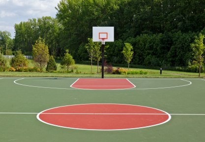

Why do we play basketball
antagonism: the duration of basketball can be long or short, but it needs the participants to run fast, take off suddenly and continuously, react quickly and compete with strength
Collectivity: basketball requires not only the players' technical and tactical ability, but also the wisdom, courage, will, vitality and creativity shown in the game, but also the players' brave and tenacious fighting spirit and the spirit of unity and cooperation
Viewing: in basketball games, you can enjoy skillful dribbling, skillful passing, accurate shooting, witty steals, wonderful dunks and extraordinary blocking. In addition, the alternation of attack and defense and confrontation make both sides fight for wisdom and courage. The dramatic changes of the court situation can make the participants and viewers get psychological satisfaction and pleasure
Fun: basketball is easy and interesting, and it can vary from person to person, from place to place, from time to time and from need to need. By changing all kinds of activities, basketball is more convenient and attract people's participation, so as to achieve the purpose of active body and mind, fitness and strong body, and then improve the social civilization atmosphere, enrich people's amateur cultural and entertainment life
Fitness: by participating in basketball, people can not only strengthen their body, but also develop their personality, self-confidence, aesthetic taste, willpower, enterprising spirit, self-discipline and other abilities. It is also conducive to the cultivation of moral qualities of unity and cooperation, respect for opponents and fair competition
|
 |